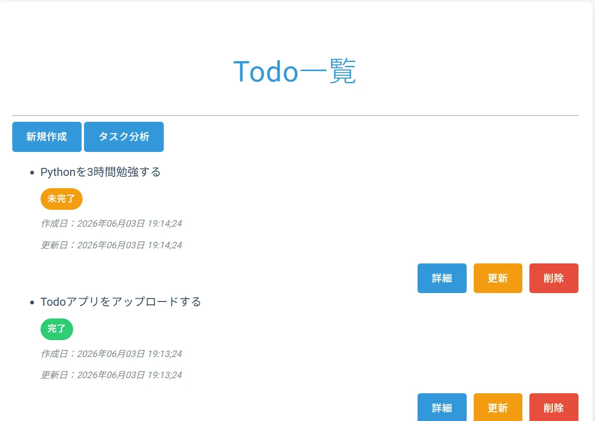

Django
Todo App
Test User (for login)
Username: testuser
Password: testpass123
Username: testuser
Password: testpass123

Overview
タスクの登録・編集・削除ができる CRUD アプリです。
ログイン機能を備え、認証済みユーザーのみが Todo を操作できるようにしています。
また、matplotlib を使用したタスク統計ページも実装しています。
Tech Stack
- Python / Django
- SQLite（ローカル開発）
- matplotlib（統計グラフ）
- HTML / CSS / JS
- Render（デプロイ）
Features
- Todo管理 — タスクの登録・編集・削除、ページネーション付き一覧、詳細表示
- 認証機能 — ログイン／ログアウト、アクセス制御
- 統計ページ — 完了率・作成推移をグラフ化（matplotlib）
- UIデザイン — シンプルなレイアウト、色分けで視認性向上、直感的なCRUD
- 技術的ポイント — Django CBV、LoginRequiredMixin、サーバー側グラフ生成、Renderデプロイ
Key Points
タスクの完了状態を色分けし、直感的に操作できる UI を意識しました。 統計ページでは matplotlib によるグラフ生成で、タスクの傾向を視覚的に把握できます。 また、Render へデプロイし、testuser を用意することで、すぐに動作確認できるよう配慮しています。